Overview

This robot drives autonomously through the use of a PiCamera and a CNN developed with TensorFlow. The robot is equipped with a Raspberry Pi Zero W that transmits images over SSH to a host PC. The images are run through the TensorFlow model and commands are returned to the robot. The CNN was trained on a custom-made dataset of over 1,500 images and the resulting robot is near-perfect at avoiding obstacles.

Build Process
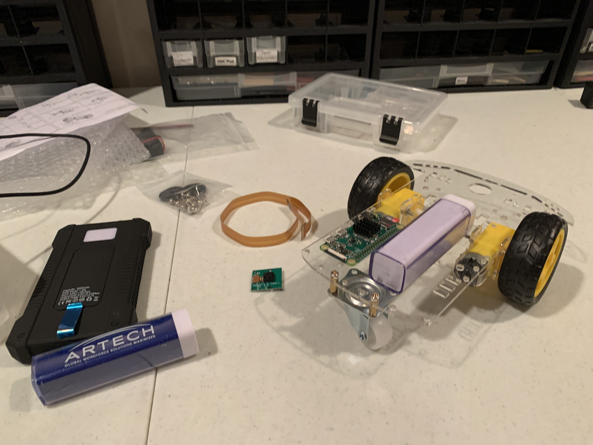Mocking up the idea with Pi, battery pack, and chassis
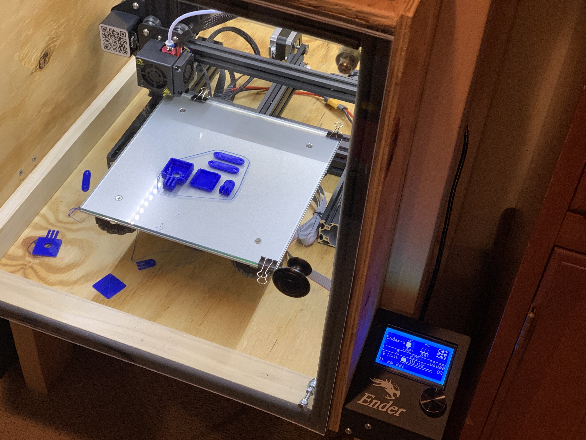3D printing mount for camera
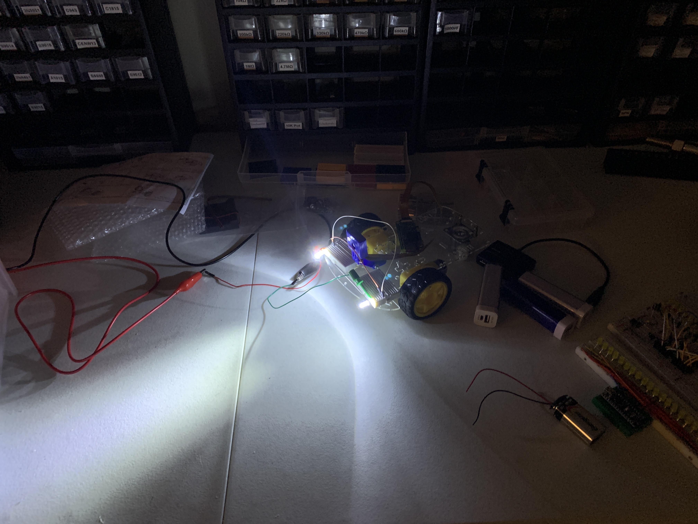Testing LEDs on the robot
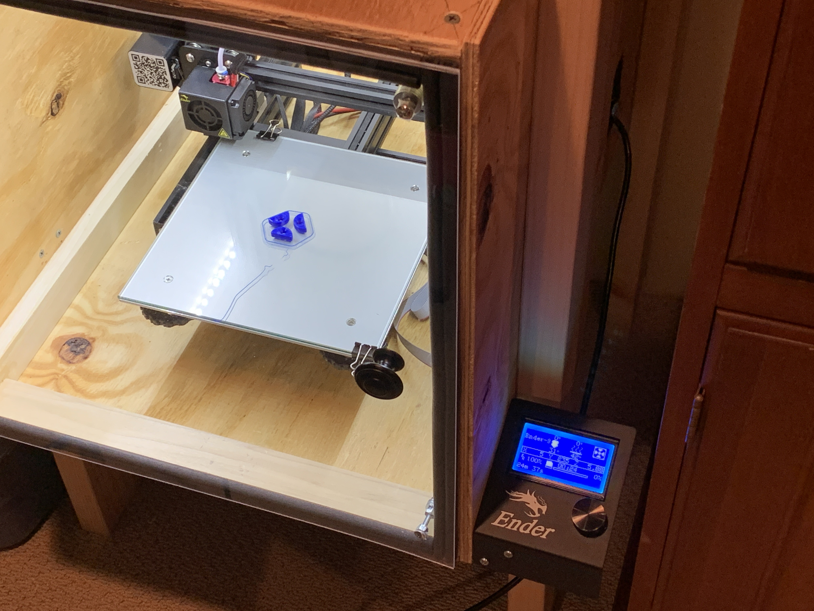Printing mounts for the LEDs
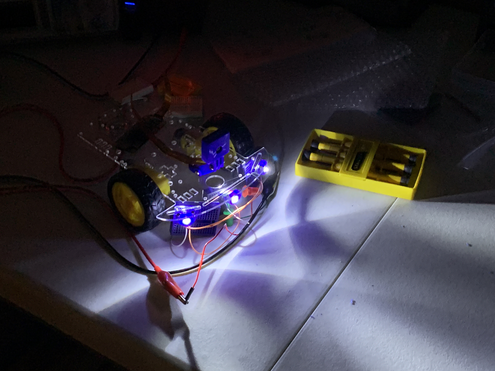Testing LEDs in mounts
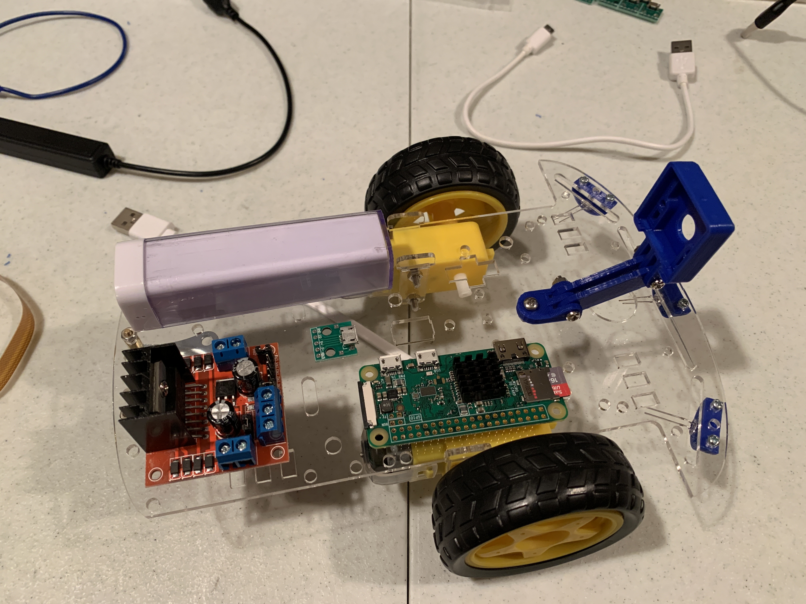Added 3D printed parts, Micro-B breakout for power connection, and L298D motor driver to mockup
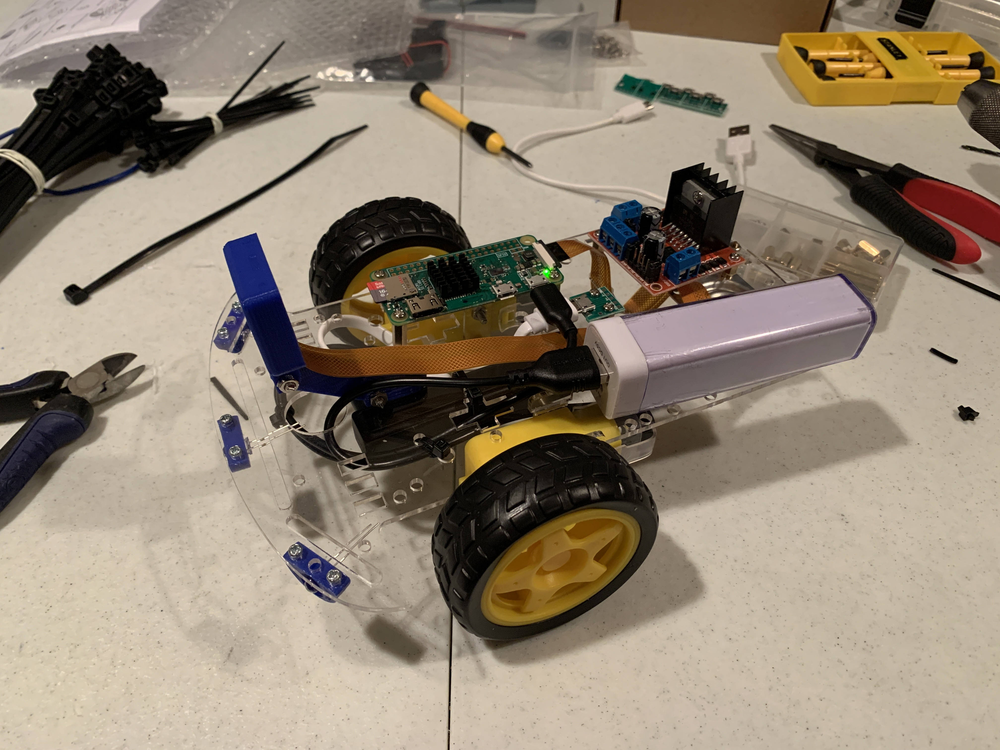First wiring of robot -- includes USB hub mounted to bottom of robot to split power to Pi and motor driver
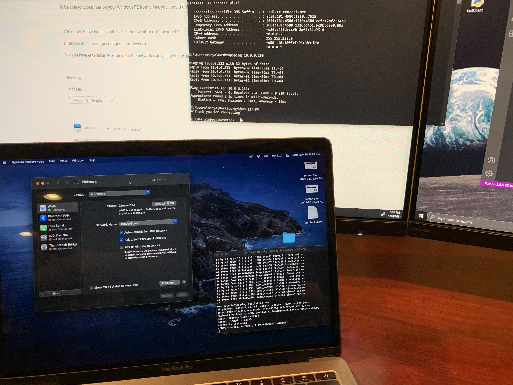Establishing SSH connection between computers. The Pi Zero W does not have sufficient computational power for this sort of vision processing, so I decided that the robot would perform best if these heavy computations were performed remotely.
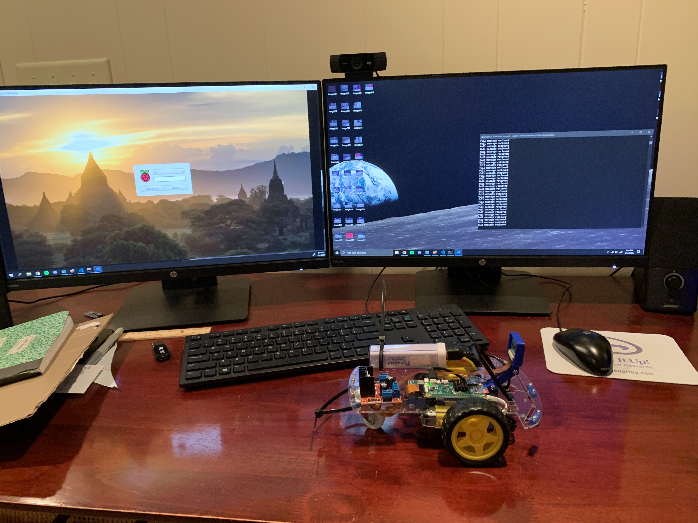Implemeting SSH to send messages between Pi and PC
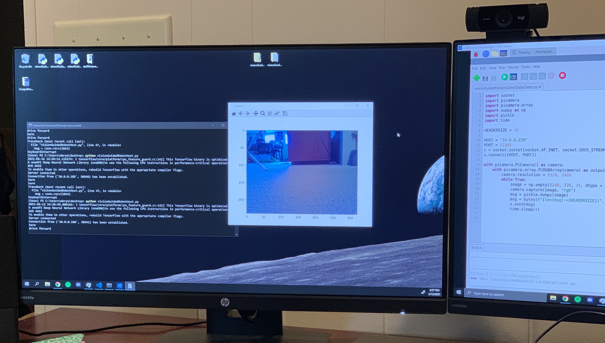Sending image (Numpy array) over the SSH connection using the Python Socket and Pickle libraries
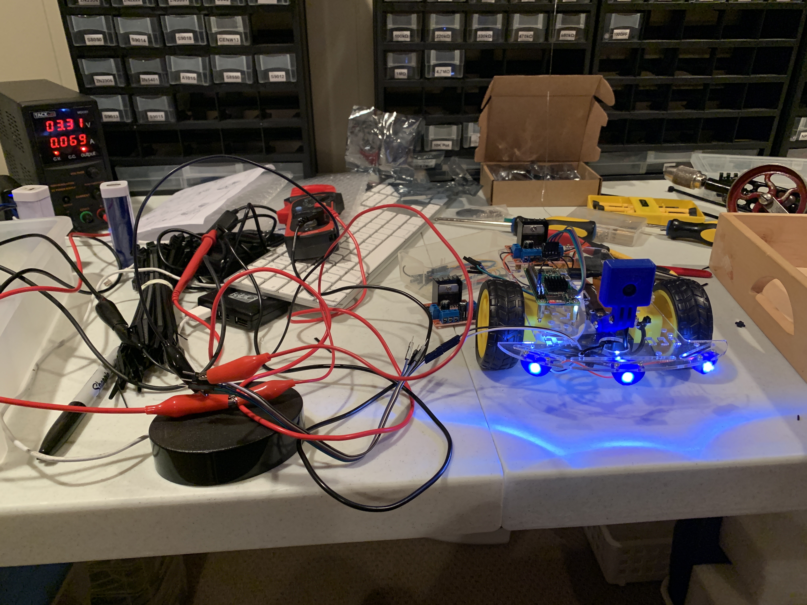Robot wiring entirely soldered. This includes soldering all of the headers onto the Pi.
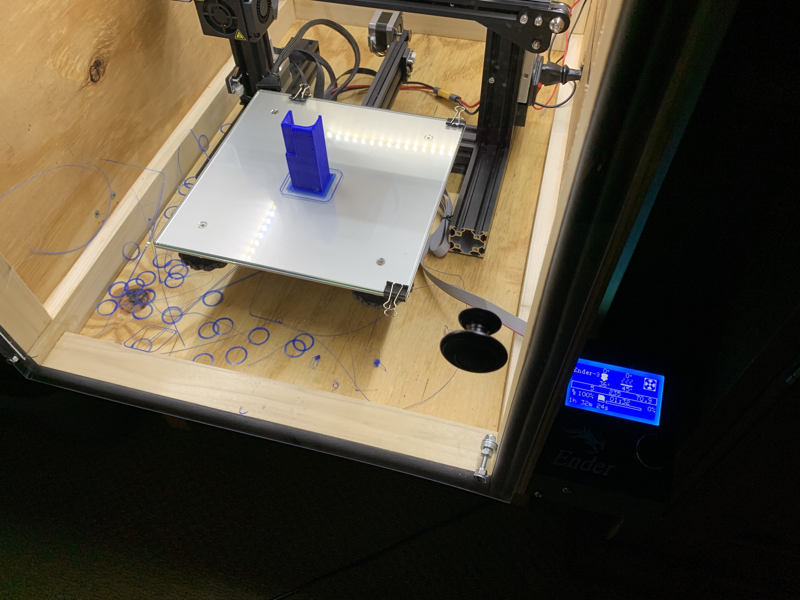3D printing a better mount for the battery pack
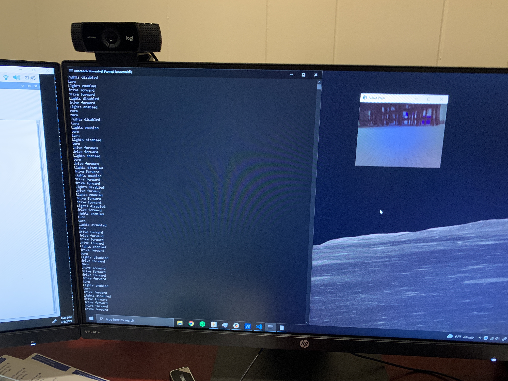Added live view of the images on the PC
After having the physical construction and basic software complete, next came developing the machine learning model. The goal of the vision processing is to determine if the robot is blocked of not. So, for this classification problem, I went with a CNN. I chose my network to have 3 layers, of size 76,800 (320 * 240 -- the image size), 100, and 2. The output neurons correspond with 'blocked' and 'open.' I went with this simple neural structure because differentiating 'blocked' from 'open' is a rather simple classification problem, with only 2 categories and a relatively stark difference between the two.
Next, I wrote a quick program on the robot to systematically take images to build a dataset. This amassed to over 1,500 labeled images.
The model was trained over 5 epochs. The model was simple enough to do on my CPU -- training time was under 10 minutes. Not very often do I see all 16 threads of my CPU fully maxed out...
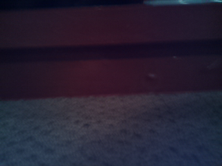Sample 'blocked' image
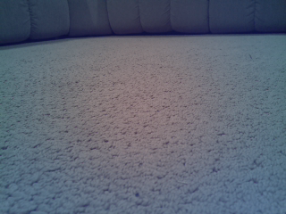Sample 'open' image
The resulting robot worked great! Whenever it encountered a 'blocked' image, it was programmed to trun around in a random direction. Additionally, the headlights would enable when the brightness of the image was below a threshold. Between the PiCamera, SSH, and CNN, the robot executes commands approximately every 0.5 seconds.
The Final Robot